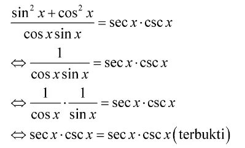

Materi Ajar

Identitas Trigonometri
Pengertian Identitas Trigonometri
Identitas trigonometri adalah suatu identitas yang berisi kesamaan fungsi trigonometri di ruas kiri dan ruas kanan. Kesamaan itu diperoleh dengan cara menjabarkan salah satu fungsi, bisa di ruas kiri atau ruas kanan hingga diperoleh bentuk akhir yang sama. Adapun contoh identitas trigonometri adalah sebagai berikut.
tan x + cot x = sec x.csx x
Dari contoh di atas, terlihat bahwa kedua ruas memuat fungsi trigonometri yang berbeda. Oleh karena dihubungkan oleh tanda “=”, sudah pasti bentuk akhir keduanya sama. Ingin tahu pembuktiannya? Simak artikelnya sama akhir, ya.
Rumus Identitas Trigonometri
Adapun rumus identitas trigonometri adalah sebagai berikut.
Rumus Identitas Trigonometri Ganjil Genap
Adapun rumus identitas trigonometri ganjil genap adalah sebagai berikut.
1. sin (-α) = -sin α
2. cos (-α) = cos α
3. tan (-α) = -tan α
Dari rumus di atas, terlihat kan jika sudutnya ada yang bertanda negatif? Lalu, apa sih arti sudut negatif itu? Suatu sudut dikatakan negatif jika arah putarannya searah dengan arah putaran jarum jam dan pengukurannya dimulai dari sumbu-x positif. Perhatikan gambar berikut.
Gambar di atas menunjukkan bahwa sudut (-α) terletak di kuadran IV. Nah, di kuadran IV itu semua nilai sudut sinus dan tangen bernilai negatif. Hanya nilai sudut cosinus yang bernilai positif. Itulah mengapa pada identitas ganjil genap hanya cosinus yang nilai sudut (-α) = sudut (α).
Contoh identitas trigonometri ganjil genap adalah sebagai berikut.
\(\sin(-30^o) = -sin(30^o) = -0,5\)
\(\cos(-30^o) = cos(30^o) = 0,5 \sqrt{3}\)
Rumus Identitas Trigonometri Kofungsi
Identitas kofungsi adalah hubungan antara dua fungsi trigonometri yang variabel sudutnya merupakan komplemen dari sudut 90o. Sudut komplementer adalah dua sudut yang saling bersebelahan dan jumlah keduanya tepat 90o. Adapun rumus identitas trigonometri kofungsi adalah sebagai berikut.
\(\sin(\frac{\pi}{2} - 2) = cos \alpha\)
\(\cos(\frac{\pi}{2} - 2) = sin \alpha\)
\(\tan(\frac{\pi}{2} - 2) = cot \alpha\)
ingat, nilai \(\frac{\pi}{2} = 90^o\), ya!
Adapun contoh identitas kofungsi adalah sebagai berikut
Rumus Identitas Trigonometri Pythagoras
Identitas Phytagoras ini mengacu pada persamaan Phytagoras yang biasanya kamu gunakan, ya. Adapun rumus identitas Phytagoras adalah sebagai berikut.
> sin2α + cos2α = 1
> tan2α + 1 = sec2α
> cot2α + 1 = csc2α
0
Adapun contoh pembuktian identitas Phytagoras adalah sebagai berikut.
Rumus Identitas Trigonometri Sudut Ganda
Sudut ganda juga biasa disebut sudut rangkap, yaitu dua sudut yang besarnya dan arahnya sama serta terletak bersebelahan. Perhatikan gambar berikut.
Rumus identitas trigonometri untuk sudut ganda adalah sebagai berikut.
\(\sin2\alpha=2sin\alpha cos\alpha\)
\(\cos2\alpha = cos^2\alpha - sin^2\alpha\)
\(tan2\alpha = \frac{2tan\alpha}{1-tan^2\alpha}\)
Untuk lebih jelasnya, simak contoh berikut.
Diketahui persamaan berikut.
\(\frac{1-cos2\alpha}{sin2\alpha}=tan\alpha\)
Buktikan dengan identitas sudut ganda bahwa persamaan di atas adalah benar!
Pembahasan:
Di persamaan tersebut ada dua identitas sudut ganda yang digunakan, yaitu cos(2α) dan sin(2 α). Diperoleh:
cos 2α = cos2 α – sin2 α
Oleh karena sin2α + cos2α = 1 ↔ cos2α = 1 – sin2α, maka cos(2α) = 1 – sin2α – sin2α = 1 – 2sin2α.
Jika disubstitusikan pada persamaan awal menjadi:
Jadi, persamaan tersebut adalah benar.
Rumus Identitas Trigonometri Jumlah dan Selisih Dua Sudut
Identitas ini bisa digunakan untuk menentukan jumlah dan selisih trigonometri dari dua sudut yang nilainya berbeda. Adapun rumus yang dimaksud adalah sebagai berikut.
Identitas jumlah dua sudut
Identitas jumlah dua sudut yang berbeda bisa dinyatakan sebagai berikut.
Perhatikan contoh berikut.
Jika tan(15o) = q, tentukan nilai tan(75o) dalam q!
Pembahasan:
Dari soal tersebut, kira-kira bagaimana ya solusinya? Apakah Quipperian sudah memiliki gambaran?
Oleh karena yang ditanyakan dalam bentuk tangen, gunakan rumus identitas jumlah dua sudut pada tangen, di mana tan(75o) = tan(60o + 15o). Dengan demikian:
\(Jadi, tan(75^o) = \frac{\sqrt{3}-q}{1-q\sqrt{3}}\), ya!
Rumus Identitas Jumlah dan Selisih Fungsi Trigonometri Sinus dan Cosinus
Jika identitas sebelumnya berlaku untuk jumlah dan selisih dua sudut, maka identitas kali ini berlaku untuk jumlah dan selisih fungsi sinus dan cosinusnya.
Adapun rumus identitasnya adalah sebagai berikut.
Identitas jumlah dua fungsi sinus dan cosinus
Identitas jumlah dua fungsi sinus dan cosinusnya adalah sebagai berikut.
Perhatikan contoh berikut.
Diketahui persamaan berikut.

Buktikan bahwa persamaan di atas adalah benar.
Pembahasan:
Oleh karena persamaan di ruas kiri sama dengan ruas kanan, maka persamaan tersebut adalah benar.
Rumus Identitas Perkalian Fungsi Trigonometri Sinus dan Cosinus
Jika kamu menemui perkalian antara fungsi sinus, antara fungsi cosinus, atau antar fungsi sinus-cosinus, gunakan identitas berikut.
Contoh Soal Identitas Trigonometri
Untuk mengasah pemahamanmu, yuk simak contoh soal berikut ini.
Contoh Soal 1
Diketahui persamaan trigonometri berikut ini.
tan x + cot x = sec x . csc x
Buktikan bahwa persamaan di atas adalah benar!
Pembahasan:
Untuk membuktikan kebenarannya, kamu hanya perlu mengubah salah satu persamaan, misalnya di ruas kiri saja maupun ruas kanan saja, sehingga diperoleh bentuk akhir yang sama. Kali ini, Quipper Blog akan mengubah persamaan di ruas kiri, ya.
Nah, di bagian pembilang di ruas kiri merupakan bentuk identitas Phytagoras, di mana sin2α + cos2α = 1. Dengan demikian:
Oleh karena bentuk akhirnya sama, maka persamaan tersebut adalah benar.
Jadi, persamaan tersebut adalah benar.
Contoh Soal 2
Dengan identitas trigonometri, buktikan bahwa sin(90o – a) = cosa!
Pembahasan:
Di soal tertulis bahwa sin(90o – a) = cosa. Untuk membuktikannya, gunakan identitas trigonometri selisih dua sudut seperti berikut.
Jadi, terbukti bahwa sin(90o – a) = cosa.
Contoh Soal 3
Jika tan(5o) = x, tentukan nilai tan(40o) dalam x!
Pembahasan:
Oleh karena yang ditanyakan dalam bentuk tangen, gunakan rumus identitas selisih dua sudut pada tangen, di mana tan(40o) = tan(45o – 5o). Dengan demikian:
Leave a comment